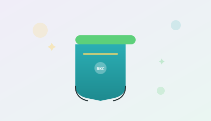

| Proper care keeps the learning layer working. One practical add-on helps. |
|
|
Day 1 · Product Care
How you care for the signalThe Body-Signal Learning Layer does one thing: preserve the wetness signal. How you care for it determines how well that signal works. |
|
 |
Why care matters as much as the productThe Body-Signal Learning Layer works by preserving a gentle wetness signal for 30–60 seconds. That signal is how your child's brain connects the feeling with the action. But here's what most people don't realise: how you wash and care for the underwear directly affects whether that signal reaches the brain. Fabric softener coats the learning layer fibres and dulls the signal. High heat can break down the mechanism. Even the way the pairs tumble in the wash can affect how evenly the signal-preserving fibres perform over time. Think of it like this: you wouldn't put a noise-cancelling microphone through the washing machine without protection and expect it to work the same way. The learning layer is a precision tool. It needs the same consideration. One parent told me: "Everything I've done when potty training other kids isn't working with him." Another said: "I tried everything — bribery, rewards, sticker charts, social stories, ABA protocols. Nothing changes the fundamental issue." And: "I don't know what to do." |
The Wash Bag: protecting the learning layerOur Wash Bag is designed specifically for the Body-Signal Learning Layer. It prevents the pairs from tangling, reduces wear on the signal-preserving fibres, and keeps the learning layer working wash after wash. Here's what it does:
The Wash Bag isn't a gimmick. It's a practical tool that helps the learning layer keep learning. Most families who add it tell us it makes the whole routine easier. Progress this week might still be quiet — and that's okay. Some kids show first signals within days. Others need weeks. Watch for: staying dry 2 hours instead of 30 minutes, pulling at the pants after an accident, walking toward the bathroom (even after). Each one is the nervous system starting to connect. |
|
If you'd like to add the Wash Bag — it's a small tool that does one job: protect the learning layer. If today's not the day, that's genuinely fine. Your 3+3 works either way.
60-Day Calm Progress Guarantee · Free shipping on orders over €50 |
|
Calm progress, one day at a time.
{{business_address}}
|
|
| You received this email because you purchased the 3+3 Bundle from BrightKidCo. If you'd rather not hear from us, you can unsubscribe here. |